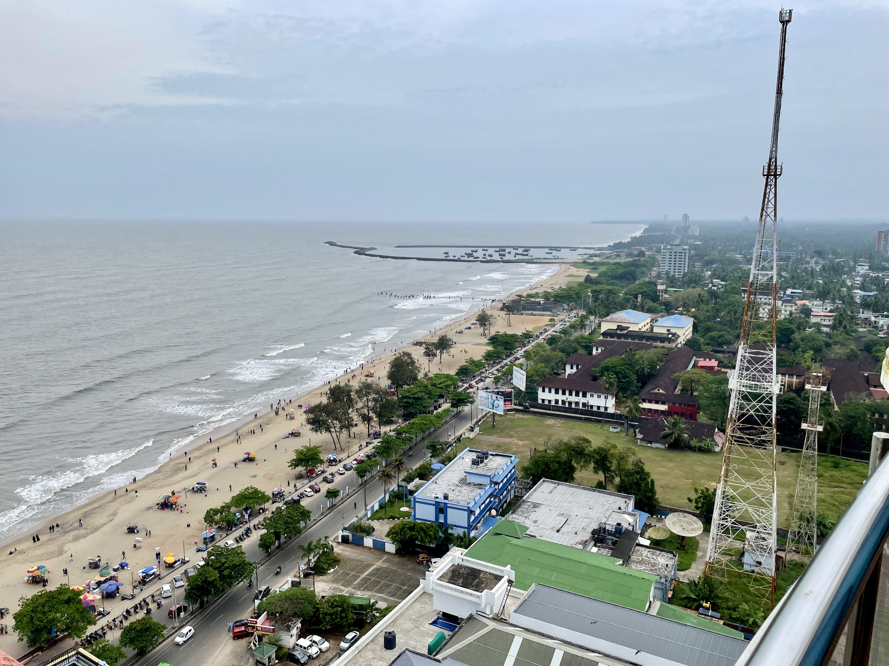

Kozhikode is a city along the Malabar Coast in the state of Kerala in India. It has a corporation limit population of 609,224 and a metropolitan population
of more than 2 million, making it the second largest metropolitan area in Kerala and the 19th largest in India. Kozhikode is classified as a Tier 2 city by
the Government of India. It is the largest city in the region known as Malabar and was the capital of the British-era Malabar district. In antiquity and the
medieval period, Kozhikode was dubbed the City of Spices for its role as the major trading point for Indian spices. It was the capital of an independent
kingdom ruled by the Samoothiris. The port at Kozhikode acted as the gateway to medieval South Indian coast for the Chinese, the Arabs, the Portuguese, the
Dutch and finally the British. According to data compiled by economics research firm Indicus Analytics in 2009 on residences, earnings and investments,
Kozhikode was ranked the second best city in India to live in.
Places to visit:
Kappad Beach, HiLite Mall, S.M. Street, Beypore Beach, Kozhippara Falls, Mananchira Square, Tali Temple